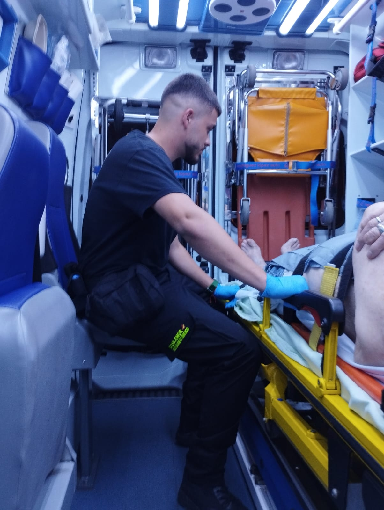
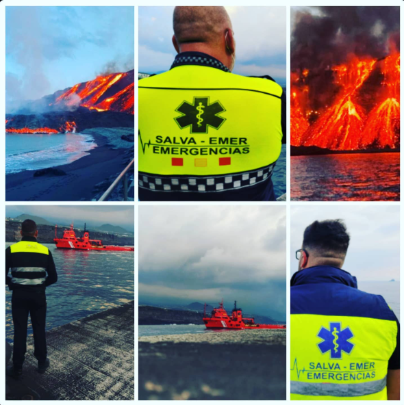
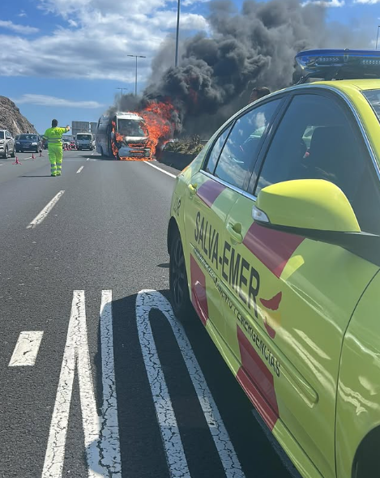
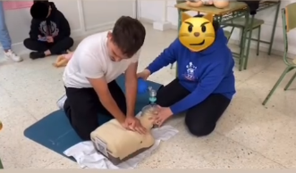

Hæft teymi sem veitir stuðning við neyðartilvik og daglega umönnun.
Við bjóðum upp á bráðamóttökuþjónustu og læknisflutninga með háþróaðri tækni og mjög hæfum heilbrigðisstarfsmönnum sem eru tilbúnir til að takast á við hverja neyðartilvik fljótt og skilvirkt.
Sérsniðin læknisþjónusta á heimilum, sem styður bráðaþjónustu og almenn læknismeðferð, tryggir skjót og skilvirk viðbrögð fyrir þá sem þurfa á hjálp að halda.
Sérhæfð fjarskiptamiðlun sem tryggir öryggi og stuðning við aldraða eða viðkvæma einstaklinga. Acuda-úrið veitir eftirlit með lífsmarki, lyfjaminningar, mánaðarlega skýrslur, neyðaraðstoð, staðsetningu og landfræðilega vöktun.
Aðgangur að heilbrigðiseiningum á fjöldaviðburðum til að takast á við allar neyðaraðstæður.
Við höfum hæft teymi og háþróaða tækni til að framkvæma björgunaraðgerðir og viðbrögð við hamförum, sem tryggja öryggi og skilvirkni.
Við veitum stuðning og ráðgjöf til einstaklinga sem verða fyrir neyðartilvikum og tökum tillit til sálfélagslegra þarfa fórnarlamba og fjölskyldna þeirra.
Sérhæft í björgun í ýmsum neyðartilvikum til að lágmarka hættur og hámarka öryggi.
Við höfum hæft og vel búið björgunarteymi til að framkvæma björgun í erfiðum landsvæðum eins og fjöllum, giljum og óbyggðum.
Við erum tilbúin til að bregðast við stórum hamförum, svo sem náttúruhamförum eða stórslysum.
Samsett af sérþjálfuðum björgunarhundum til að leita og finna einstaklinga í neyð á vatni.
Stuðningur við umferðarstjórnun í neyðartilvikum og sérstökum viðburðum.
Sérhæfð þjálfunareining sem kennir nauðsynleg færni til að bregðast við á áhrifaríkan og öruggan hátt í neyðartilvikum.
- Sérsniðin námskeið: Við þróum námskeið og vinnustofur fyrir fyrirtæki, menntastofnanir og almenning um skyndihjálp, endurlífgun og rýmingaráætlanir.
- Hermingar og Nýsköpun: Hagnýt þjálfun með háþróaðri tækni eins og björgunarshermum og sýndarveruleika.
- Vottanir: Dagskrár sem eru viðurkenndar af viðurkenndum stofnunum.
 ES
ES
 EN
EN
 DE
DE
 FR
FR
 NO
NO
 IS
IS